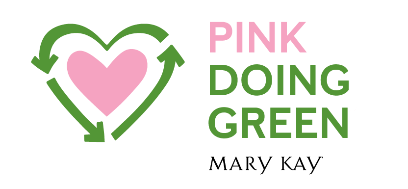
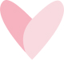
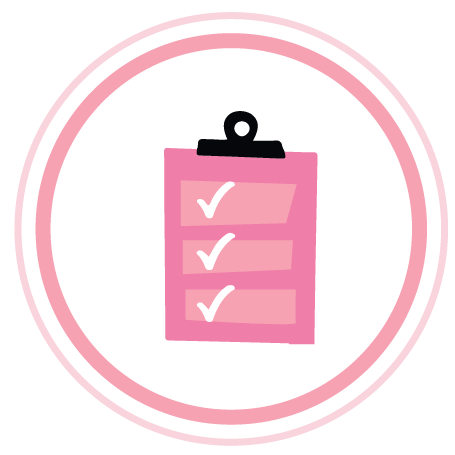

Pink Changing Lives
我們對女性的承諾
樂施精神是我們的核心精神，促使我們能豐富世界各地的婦女及其家庭的使命，透過這一致的理念，我們在全球將近40個市場中，積極回饋當地的社會，改變全球女性逆轉美麗人生及兒童生命。
Girl Power 時代來臨！
- 全球慈善活動的回饋社會項目
- 幫助世界各地的婦女和兒童
- 建立圖書館幫助有需要的兒童
- 資助貧困女孩的教育
- 提供拯救生命的醫療服務
- 支持反對販運組織
- 幫助殘疾兒童
- 教授對乳癌的認識
- 幫助結束家庭暴力教授對乳癌的認識

Pink Doing Green
Pink Doing Green
我們對地球的承諾
積少成多將是改變地球的第一步：落實環保概念
不管是使用再生能源、綠色環保種植造林、使用可生物降解的包裝物料
產品使用環保設計包裝，一個簡單綠色行動，不僅呵護你的肌膚，同時愛護地球，提升生活品質！
增進我們的幸福和快樂吧

不管是使用再生能源、綠色環保種植造林、使用可生物降解的包裝物料
產品使用環保設計包裝，一個簡單綠色行動，不僅呵護你的肌膚，同時愛護地球，提升生活品質！
增進我們的幸福和快樂吧
MARY KAY的綠色態度 跟著我們一起友善地球
全球再循環計畫
MARY KAY是全球最早制定循環計畫的公司，MARY KAY全球生產中心，每天透過再循環計畫，針對產品的包裝、紙、塑料等進行循環使用
100％生物降解包裝物料
生物降解包裝物料是可以在自然界降解的材質，MARY KAY運送產品時使用的包裝填充物，是由可再生栗米和馬鈴薯澱粉組成的可生物降解包裝物料製造
零堆填生產中心
MARY KAY在美國的生產中心，已實現零垃圾堆填，亞太區生產中心則建立可處理150噸的廢水處理站，實行『廢水排放』、『固體廢棄物零堆填』的環保目標
環保設計包裝
MARY KAY提供創新、環保的產品及包裝，
採用可重複使用的產品設計，
例如MARY KAY的彩妝盒可重複使用的磁石設計，任何彩妝品可隨意組合加進彩妝盒，減少更換浪費

100％再生能源使用
MARY KAY全球總部和全球生產中心是由100%的可再生能源提供動力！
全球植樹達到100萬棵
於全球分公司活動中種植超過100萬棵樹木